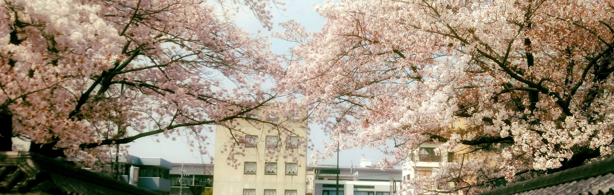

Okanosakiについて
本サイトは、創作メンバー「オカノサキ」の創作活動を紹介している作品公開サイトです。
作品投稿は基本的に不定期ですが、本サイトやtwitterなどで最新の更新情報を配信していきます。
さらに、編集長の勝手な思い付きなどにより特別企画を開催することもあります（あくまでよていですが）。
また、メンバー紹介欄ではメンバーの外部活動も紹介しています。気になる創作家が居ましたら、ぜひそちらもご覧ください。
本サイトの見方ですが、小説作品や編集長のつぶやきは縦読みとなっています。
もし読みにくいなどの不満がございましたら、お気軽にこちらまでお声掛けください。→@okano_saki勿論他のご要望やご相談も受け付けております。
「Okanosaki」はこれからも、皆様の生活に彩を添えられるよう努めてまいります。
お願い：本サイトに掲載されている創作物は全て大切な著作物です。
無断でのダウンロードや転載はしないようお願いいたします。
文責 Okanosaki 管理人兼編集長 御寺 彰